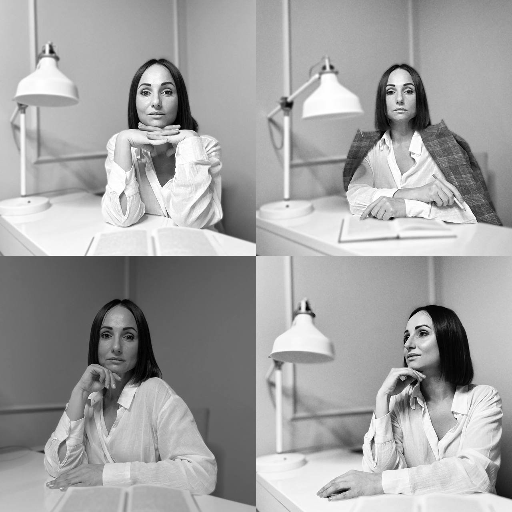

Екатерина Судас
Узнаёте себя?
Научиться управлять своим состоянием
Психология состояний — читать на Яндекс Дзен →
Обо мне
Клиническая психология, МГУ (2026). В работе опираюсь на когнитивно-поведенческую терапию и элементы психодинамики. Использую структурную диагностику и предоставляю письменные рекомендации по итогам работы.
Как я работаю
Два направления — один подход
Женщины · Отношения и тело
«Я опять выбрала не того»
«Терплю то, что не нужно»
«Вроде всё есть — а внутри пусто»
«Понимаю всё, а ничего не меняется»
«Без него я никто»
«Не чувствую себя женщиной»
«Не могу найти партнёра — слишком сильная»
«Разрываюсь между карьерой и материнством»
«Всё хорошо — а внутри одиноко»
Мужчины · Реализация и доход
«Упираюсь в потолок»
«Внутри — самозванец»
«Если остановлюсь, накроет»
«Ору на жену. Потом стыдно»
«Контролирую всё»
«Бегу от себя через работу»
Также работаю с
Последствия насилия
Абьюзивные отношения
Травматический детский опыт
Зависимости
Форматы работы
Развод, долги, измена, тревога, решение, которое не даётся — у вас есть полтора часа, чтобы увидеть, что на самом деле стоит за проблемой.
Три часа вашего времени. Две недели, за которые меняется взгляд на себя.
30 000 ₽/мес · 7 500 ₽/сессия
Где вы начали уменьшать себя. Где научились быть удобным. Где стали предавать то, что чувствуете — ради того, чтобы всё выглядело нормально.
Все форматы работы
нажмите чтобы увидеть
Мечта есть — а действий нет. Планы есть — а энергии на них нет.
Доказываете. Заслуживаете. Терпите. Соглашаетесь на то, что вам не подходит — лишь бы не услышать «нет».
Это ограничения, которые стали частью вас — на основе ситуаций, где вас отвергали, унижали, обесценивали.
Если вы долго чего-то хотите и не реализуете — значит, либо цель не ваша, либо есть внутренняя причина, по которой вам выгодно оставаться на месте.
Что вы получаете
FAQ
Как проходит первая сессия?
Полтора часа. Анамнез, тестирование, глубокий устный разбор. Без давления.
Онлайн или очно?
Онлайн. Видеосвязь, камера обязательна.
Сколько нужно сессий?
Зависит от запроса. От 1 до 20+. Скажу честно на первой встрече.
А если я заплачу?
Нормально. Слёзы — сигнал тела. Мы близко.
Это больно?
Терапия может быть непростой, но мы работаем в вашем темпе. Если становится слишком интенсивно — замедляемся. Это называется титрация: проживание маленькими, выносимыми порциями.
Как вы работаете?
Структурно: диагностика, тестирование, разбор. По итогам — аналитический отчёт и рекомендации. Понятные сроки и формат.
Был у психолога, не помогло
Бывает. Подходы разные, и не каждый подходит каждому. Мой метод включает работу с телом и анализ причин — возможно, это то, чего не хватало.
Что если не подойдёт?
Первая сессия — полноценная диагностическая встреча. По итогам вы получите устный разбор и сможете принять решение о продолжении. Никаких обязательств.
Сколько стоит?
Первая сессия — 10 000 руб. Все форматы и цены — в разделе «Форматы работы» выше.
Я никогда не был у психолога
Первая сессия построена так, чтобы вам было понятно и комфортно. Начнём с вашего запроса и пойдём в вашем темпе.
Можно ли оплатить частями?
Да, для программ от 2 сессий возможна оплата поэтапно. Детали обсуждаем индивидуально.
Библиотека
Зачем читать о психологии
читать
Иногда одна книга делает то, что не удаётся месяцам размышлений — помогает увидеть себя со стороны. Не потому что в ней есть ответ. А потому что она задаёт точный вопрос.
Когда вы читаете о том, как устроена психика, мозг не просто запоминает — он перестраивается. Между нейронами возникают новые связи, старые паттерны начинают ослабевать. Это называется нейропластичность, и она работает в любом возрасте.
Правильная книга в нужный момент — это мягкий толчок к переменам. Она не заменит терапию, но может стать началом разговора с собой, который вы давно откладывали.
Здесь — библиотека, собранная за годы практики. Каждая книга проверена опытом работы с людьми.
Не знаете, с чего начать? Пройдите квиз выше — подберу книгу под ваш запрос.
Литература для чтения
нажмите чтобы открыть каталог
Профессиональная
Я и ОноФрейд · 1923
Структура психики: Оно, Я, Сверх-Я.
Поздний Фрейд. Впервые описал три инстанции: Оно (бессознательные влечения), Я (то, что мы считаем собой) и Сверх-Я (внутренний критик). Объяснил, почему человек делает то, чего сам не хочет — и почему «взять себя в руки» не работает.
Психика и её лечениеТэхке
Три типа терапии для трёх типов личности.
Поддерживающая (для хрупких структур), эмпатическая (для пограничных состояний), интерпретативная (для невротических). Учит видеть, с кем именно работаешь — и подбирать стратегию.
Основные формы страхаРиман · 1961
Четыре базовых страха — четыре типа личности.
Страх утраты себя (шизоидная), страх одиночества (депрессивная), страх изменений (навязчивая), страх постоянства (истерическая). Ключ к пониманию, почему один избегает близости, а другой не может быть один.
Психоаналитическая диагностикаМак-Вильямс
Типы личности как портреты. Читаешь — узнаёшь себя.
Шизоидная, нарциссическая, депрессивная, истерическая, обсессивная структуры — каждая глава как живой человек. Незаменима и для специалиста, и для любого, кто хочет понять людей.
Теория семейных системБоуэн
Семья — система. Изменение в одной части меняет всё.
Слияние и дифференциация, эмоциональные треугольники, межпоколенческая передача травмы. Ваши паттерны в отношениях — не выбор, а наследство родовой системы. Фундамент для работы с сепарацией.
Высшие корковые функцииЛурия
Как устроен мозг. Фундамент нейропсихологии.
Как зоны коры отвечают за речь, восприятие, память, мышление. Почему повреждение крошечного участка меняет всю личность. Сложная, но если хотите понимать психику на уровне мозга — начните с Лурии.
Секс, любовь и сердцеЛоуэн
Как мышечные зажимы блокируют способность любить.
Лоуэн показывает: сердце — не метафора. Физическое напряжение в грудной клетке отрезает человека от способности чувствовать любовь и отдаваться близости. Когда тело зажато — чувства не проходят. Связь между дыханием, грудной клеткой и способностью к любви. Тело — карта вашей эмоциональной истории.
Любовь и оргазмЛоуэн
Почему тело не может отпустить контроль.
Лоуэн исследует связь между характерным панцирем (Райх) и способностью к полной отдаче — в любви и в сексуальности. Мышечные блоки, сформированные в детстве, не дают телу расслабиться и довериться. Контроль, который когда-то защищал от боли, теперь мешает чувствовать удовольствие и близость. Книга о том, как вернуть телу право на жизнь.
Работа с телом в психотерапииТимошенко, Леоненко
Практическое руководство по телесно-ориентированной работе.
Систематизация подходов к работе с телом в психотерапии. Контроль собственных действий как базовый навык саморегуляции, границы тела и границы «я», телесные паттерны как отражение характерологических защит. Незаменимое пособие для практикующих терапевтов.
ПривязанностьБоулби
Фундамент: как первые 18 месяцев определяют всю жизнь.
Основополагающий труд по теории привязанности. Стиль привязанности формируется в первые месяцы жизни и определяет, как человек будет строить отношения, реагировать на разлуку и близость. Боулби доказал: потребность в привязанности — не слабость, а биологическая необходимость.
Дар психотерапииЯлом
Открытое письмо начинающему терапевту.
Ялом делится опытом за 45 лет практики. Как быть с клиентом, когда не знаешь что делать. Как использовать собственные чувства. Как терапевтическое ухудшение может быть признаком прогресса. Честная, живая книга.
Игры, в которые играют людиБерн · 1964
Три эго-состояния: Родитель, Взрослый, Ребёнок.
Основа трансактного анализа. Берн показал: мы постоянно переключаемся между тремя состояниями — и бо́льшую часть общения проводим в «играх», которые не осознаём. Адаптивный Ребёнок — тот, кто научился быть удобным ценой отказа от себя.
Пробуждение тиграЛевин
Как тело хранит травму — и как её высвободить.
Питер Левин показал: травма живёт не в воспоминаниях, а в нервной системе. Freeze-реакция (замирание) — это не слабость, а биологический ответ на невыносимое. Тело замирает, когда бегство и борьба невозможны. И остаётся замершим — пока травма не будет прожита через тело.
Семьи и семейная терапияМинухин
Структура семьи: границы, иерархия, подсистемы.
Минухин показал: семья — это структура с правилами. Когда ребёнок занимает место взрослого (парентификация) или границы между подсистемами размываются — система начинает порождать симптомы. Классика структурной семейной терапии.
Стресс жизниСелье
Три стадии стресса: тревога, сопротивление, истощение.
Ганс Селье — отец концепции стресса. Доказал: стресс — не событие, а реакция организма. И у этой реакции есть предел. Когда ресурс исчерпан — наступает фаза истощения. Тело сигнализирует задолго до срыва. Вопрос — слышим ли мы его.
Тяжёлые личностные расстройстваКернберг
Интеграция расщеплённого аффекта.
Кернберг описал, как при тяжёлых нарушениях личности аффект остаётся расщеплённым: «хорошее» и «плохое» не соединяются в одном объекте. Терапия — это путь к интеграции. Когда человек способен выдержать амбивалентность — он способен выдержать реальность.
Межличностный мир ребёнкаСтерн
Как мать и младенец настраиваются друг на друга.
Дэниел Стерн исследовал аффективную настройку: процесс, при котором мать отражает не поведение ребёнка, а его внутреннее состояние. Если настройки не было — ребёнок не учится понимать, что чувствует. Фундамент для понимания алекситимии и эмоциональной глухоты.
Человек в поисках смыслаФранкл · 1946
Между стимулом и реакцией есть пространство свободы.
Виктор Франкл — психиатр, выживший в концлагере. Доказал на собственном опыте: даже в нечеловеческих условиях человек сохраняет свободу выбора — как реагировать. Основа логотерапии и третьей венской школы психотерапии.
Современный трансактный анализСтюарт, Джоинс
Полное руководство по ТА для практиков.
Систематическое изложение трансактного анализа: эго-состояния, жизненные сценарии, игры, рэкетные чувства. Разбор Адаптивного и Свободного Ребёнка, контаминации Взрослого. Учебник, который используют в сертификационных программах ЕАТА.
Для тех, кто хочет понять себя
Искусство любитьФромм · 1956
Любовь — не чувство, а практика.
Фромм показал: любовь — это не то, что «случается». Это практика, которой нужно учиться. Объясняет, почему мы путаем любовь с зависимостью и что начинается после влюблённости.
Так говорил ЗаратустраНицше · 1883
Учит красивому слогу и мышлению образами.
Не трактат — а поэма. После глубокой терапевтической работы жизнь ощущается иначе. И нужен язык, способный это вместить. Заратустра учит мощному, свободному слогу.
СараХикс
Возвращает контакт с внутренним ребёнком.
Написана как сказка. История девочки, которая учится смотреть на мир глазами внутреннего ребёнка — того, кто ещё помнит радость и доверие.
Как найти любовь, которую стоит сохранитьХендрикс
Почему мы выбираем тех, кто похож на родителей.
Авторы — супруги-психотерапевты. Объясняют, как детский опыт формирует «образ любви». Для тех, кто хочет встретить любовь — и на этот раз не по старому сценарию.
Критика чистого разумаКант · 1781
Нравственный закон — не ограничение, а внутренняя природа.
Читать Канта очень трудно. Но он доказал то, что мы чувствуем, но не можем сформулировать: человек — существо социальное, и совесть — не навязанное извне, а часть природы.
АнтихрупкостьТалеб · 2012
Что вас не убивает — делает сильнее. Это не метафора.
Антихрупкость — свойство становиться сильнее от ударов. Кости крепнут под нагрузкой, иммунитет тренируется. Психика тоже. Для тех, кто в непростом периоде. Слушать на YouTube.
48 законов властиГрин · 1998
Честная книга о том, как устроена власть.
48 законов с историческими примерами за три тысячи лет. Учит видеть скрытые мотивы в отношениях. Слушать на YouTube.
Искусство обольщенияГрин · 2001
Девять архетипов обольстителя. Узнаете себя.
Сирена, Повеса, Идеальный возлюбленный, Денди, Кокетка, Чаровник, Харизматик, Звезда. Не про секс — про психологию влияния. Слушать на YouTube.
Отсутствующий отец и его влияние на дочьШварц · 2020
Почему вы выбираете тех, кто эмоционально недоступен.
Юнгианский аналитик исследует, как отсутствующий отец формирует самооценку дочери. Отец-жертва, отец-нарцисс, идеализированный, «мёртвый» — каждый оставляет свой след.
Подходим друг другуЛевин, Хеллер
Почему вы выбираете тех, кого выбираете.
Три типа привязанности — надёжный, тревожный, избегающий — определяют всё: кого выбираете, как ведёте себя в ссорах. У вас определённый стиль — и его можно изменить.
Предательство телаЛоуэн
Когда тело становится врагом — и как вернуться к себе.
Основатель биоэнергетического анализа. Когда тело вместо удовольствия приносит стыд — человек перестаёт его чувствовать. Живёт «в голове». Но тело помнит всё.
Расколотое «Я»Лэнг · 1960
Где граница между нормальностью и безумием.
Основатель антипсихиатрии. Показывает, как «я» раскалывается под давлением невыносимой реальности. Онтологическая неуверенность, ложное «я» — это знакомо не только психотикам.
Материнская любовьНекрасов
Когда любовь матери душит — а не растит.
Некрасов показывает обратную сторону материнской любви: гиперопеку, слияние, невозможность отпустить. Когда мать живёт через ребёнка — ребёнок не может стать собой. Книга для тех, кто чувствует вину за попытку жить свою жизнь. И для матерей, которые готовы честно посмотреть на свои мотивы.